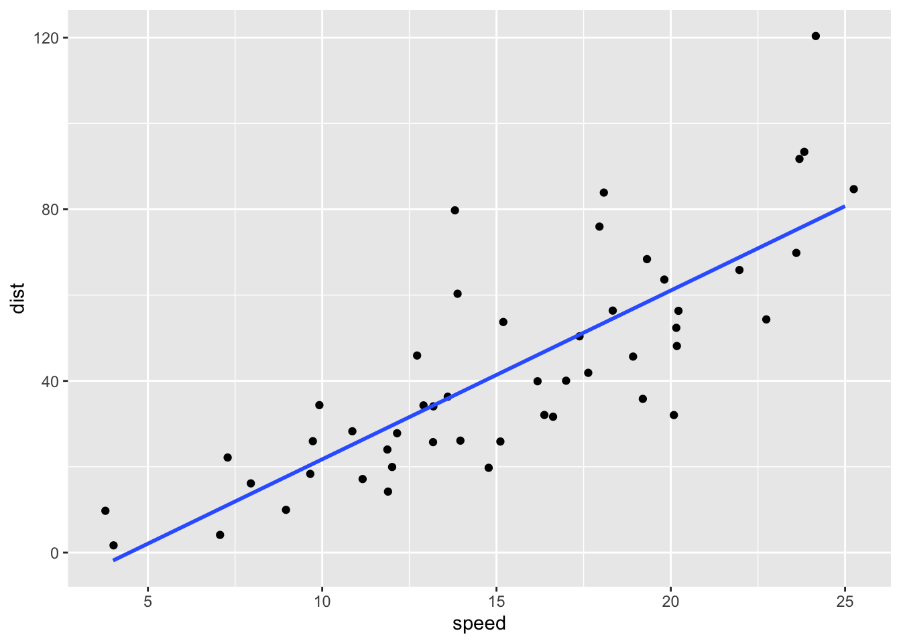
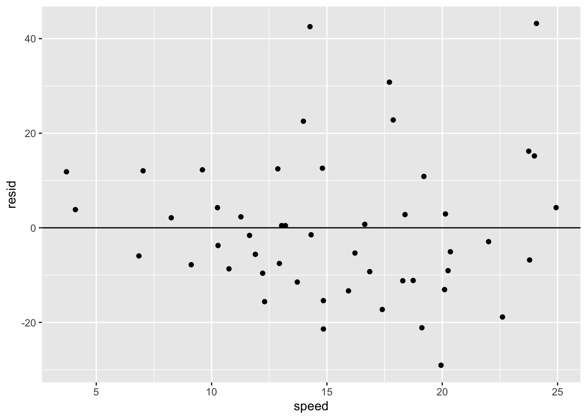

Chapter 6 Exploratory Data Analysis (EDA) 5
Course Contents
- 2021-12-08: Introduction: About the course
- An introduction to open and public data, and data science - 2021-12-15: Exploratory Data Analysis (EDA) 1 [lead by hs]
- R Basics with RStudio and/or RStudio.cloud; R Script, swirl - 2021-12-22: Exploratory Data Analysis (EDA) 2 [lead by hs]
- R Markdown; Introduction totidyverse; RStudio Primers - 2022-01-12: Exploratory Data Analysis (EDA) 3 [lead by hs]
- Introduction totidyverse; Public Data, WDI, etc - 2022-01-19: Exploratory Data Analysis (EDA) 4 [lead by hs]
- Introduction totidyverse; WDI, UN, WHO, etc - 2022-01-26: Exploratory Data Analysis (EDA) 5 [lead by hs]
- Introduction totidyverse; UN, WHO,OECD, US gov, etc - 2022-02-02: Inference Statistics 1
- 2022-02-09: Inference Statistics 2
- 2022-02-16: Inference Statistics 3
- 2022-02-23: Project Presentation

Contents of EDA5
Data Science is empirical!?
empirical: based on, concerned with, or verifiable by observation or experience rather than theory or pure logic
Part I: Data Modeling
Introduction to Modeling and EDA, in Moodle
Exploration in Visualization
Modeling
- Scientific: Why? Prediction! - Do you support this?
- Evidence based! - What does it mean?
- What is regression, and why regression?
- Linear Regression, ggplot2
- Predictions and Residues
Part II: Examples using Public Data and Roundup
6.1 Part I: Exploratory Data Analysis and Data Modeling
6.1.1 Exploration in Visualization, I – r4ds:EDA
EDA is an iterative cycle. You:
Generate questions about your data.
Search for answers by visualising, transforming, and modelling your data.
Use what you learn to refine your questions and/or generate new questions.
“There are no routine statistical questions, only questionable statistical routines.” — Sir David Cox (1924-2022)
“Far better an approximate answer to the right question, which is often vague, than an exact answer to the wrong question, which can always be made precise.” — John Tukey (1915-2000)
6.1.2 Exploration in Visualization, II – r4ds:EDA
The very basic questions:
What type of variation occurs within my variables?
What type of covariation occurs between my variables?
Typical values
Which values are the most common? Why?
Which values are rare? Why? Does that match your expectations?
Can you see any unusual patterns? What might explain them?
6.1.3 Exploration in Visualization, III – r4ds:EDA
Clusters and Groups
How are the observations within each cluster similar to each other?
How are the observations in separate clusters different from each other?
How can you explain or describe the clusters?
Why might the appearance of clusters be misleading?
Outliers and Unusual Values
Sometimes outliers are data entry errors; other times outliers suggest important new science.
6.1.4 Exploration in Visualization, IV – r4ds:EDA
Patterns and models
Could this pattern be due to coincidence (i.e. random chance)?
How can you describe the relationship implied by the pattern?
How strong is the relationship implied by the pattern?
What other variables might affect the relationship?
Does the relationship change if you look at individual subgroups of the data?
6.1.5 EDA and Data Modeling: Simple Summary of Data
Goal: A simple low-dimensional summary of a dataset. Ideally, the model will capture true “signals” (i.e. patterns generated by the phenomenon of interest), and ignore “noise” (i.e. random variation that you’re not interested in).
- “predictive” models: supervised
- “data discovery” models: unsupervised
6.1.6 Hypothesis generation vs. hypothesis confirmation
Each observation can either be used for exploration or confirmation, not both.
You can use an observation as many times as you like for exploration, but you can only use it once for confirmation. As soon as you use an observation twice, you’ve switched from confirmation to exploration.
If you are serious about doing an confirmatory analysis, one approach is to split your data into three pieces before you begin the analysis:
60% of your data goes into a training (or exploration) set. You’re allowed to do anything you like with this data: visualise it and fit tons of models to it.
20% goes into a query set. You can use this data to compare models or visualisations by hand, but you’re not allowed to use it as part of an automated process.
20% is held back for a test set. You can only use this data ONCE, to test your final model.
6.1.7 R4DS: Model Basics
There are two parts to a model:
First, you define a family of models that express a precise, but generic, pattern that you want to capture. For example, the pattern might be a straight line, or a quadratic curve. You will express the model family as an equation like \(y = a_1 * x + a_2\) or \(y = a_1 * x ^ {a_2}\). Here, \(x\) and \(y\) are known variables from your data, and \(a_1\) and \(a_2\) are parameters that can vary to capture different patterns.
Next, you generate a fitted model by finding the model from the family that is the closest to your data. This takes the generic model family and makes it specific, like \(y = 3 * x + 7\) or \(y = 9 * x ^ 2\).
It’s important to understand that a fitted model is just the closest model from a family of models. That implies that you have the “best” model (according to some criteria); it doesn’t imply that you have a good model and it certainly doesn’t imply that the model is “true”.
6.1.8 All models are wrong, but some are useful. - George E.P. Box (1919-2013)
Now it would be very remarkable if any system existing in the real world could be exactly represented by any simple model. However, cunningly chosen parsimonious models often do provide remarkably useful approximations. For example, the law PV = RT relating pressure P, volume V and temperature T of an “ideal” gas via a constant R is not exactly true for any real gas, but it frequently provides a useful approximation and furthermore its structure is informative since it springs from a physical view of the behavior of gas molecules.
For such a model there is no need to ask the question “Is the model true?”. If “truth” is to be the “whole truth” the answer must be “No”. The only question of interest is “Is the model illuminating and useful?”.
The goal of a model is not to uncover truth, but to discover a simple approximation that is still useful.
6.1.9 Regression Analysis (wikipedia)
In statistical modeling, regression analysis is a set of statistical processes for estimating the relationships between a dependent variable (‘outcome variable’) and one or more independent variables (‘predictors’, ‘covariates’, or ‘features’). The most common form of regression analysis is linear regression, in which a researcher finds the line (or a more complex linear combination) that most closely fits the data according to a specific mathematical criterion.
Two purposes of regression analysis: First, regression analysis is widely used for prediction and forecasting. Second, regression analysis can be used to infer causal relationships between the independent and dependent variables. Importantly, regressions by themselves only reveal relationships between a dependent variable and a collection of independent variables in a fixed dataset. To use regressions for prediction or to infer causal relationships, respectively, a researcher must carefully justify why existing relationships have predictive power for a new context or why a relationship between two variables has a causal interpretation.
6.1.10 History of Regression Analysis (wikipedia)
The earliest form of regression was the method of least squares, which was published by Legendre in 1805, and by Gauss in 1809. Legendre and Gauss both applied the method to the problem of determining, from astronomical observations, the orbits of bodies about the Sun (mostly comets, but also later the then newly discovered minor planets). Gauss published a further development of the theory of least squares in 1821, including a version of the Gauss–Markov theorem.
The term “regression” was coined by Francis Galton in the nineteenth century to describe a biological phenomenon. The phenomenon was that the heights of descendants of tall ancestors tend to regress down towards a normal average (a phenomenon also known as regression toward the mean). For Galton, regression had only this biological meaning, but his work was later extended by Udny Yule and Karl Pearson to a more general statistical context.
6.1.11 The First Example
plot(cars)
plot(cars) # cars: Speed and Stopping Distances of Cars
abline(lm(cars$dist~cars$speed))
summary(lm(cars$dist~cars$speed))##
## Call:
## lm(formula = cars$dist ~ cars$speed)
##
## Residuals:
## Min 1Q Median 3Q Max
## -29.069 -9.525 -2.272 9.215 43.201
##
## Coefficients:
## Estimate Std. Error t value Pr(>|t|)
## (Intercept) -17.5791 6.7584 -2.601 0.0123 *
## cars$speed 3.9324 0.4155 9.464 1.49e-12 ***
## ---
## Signif. codes: 0 '***' 0.001 '**' 0.01 '*' 0.05 '.' 0.1 ' ' 1
##
## Residual standard error: 15.38 on 48 degrees of freedom
## Multiple R-squared: 0.6511, Adjusted R-squared: 0.6438
## F-statistic: 89.57 on 1 and 48 DF, p-value: 1.49e-126.1.12 Model Analysis with tidyverse: modelr
- Tidymodels: https://www.tidymodels.org
modelr: https://modelr.tidyverse.org
library(tidyverse)
library(modelr)
t_cars <- as_tibble(cars)
(mod <- lm(dist ~ speed, data = t_cars))##
## Call:
## lm(formula = dist ~ speed, data = t_cars)
##
## Coefficients:
## (Intercept) speed
## -17.579 3.932##
## Call:
## lm(formula = dist ~ speed, data = t_cars)
##
## Residuals:
## Min 1Q Median 3Q Max
## -29.069 -9.525 -2.272 9.215 43.201
##
## Coefficients:
## Estimate Std. Error t value Pr(>|t|)
## (Intercept) -17.5791 6.7584 -2.601 0.0123 *
## speed 3.9324 0.4155 9.464 1.49e-12 ***
## ---
## Signif. codes: 0 '***' 0.001 '**' 0.01 '*' 0.05 '.' 0.1 ' ' 1
##
## Residual standard error: 15.38 on 48 degrees of freedom
## Multiple R-squared: 0.6511, Adjusted R-squared: 0.6438
## F-statistic: 89.57 on 1 and 48 DF, p-value: 1.49e-12ggplot(t_cars, aes(speed, dist)) + geom_point() +
geom_abline(slope = coef(mod)[[2]], intercept = coef(mod)[[1]])
ggplot(t_cars, aes(speed, dist)) + geom_jitter() +
geom_smooth(method = "lm", se = FALSE)
6.1.13 Predictions \(\hat{y} = a_1 + a_2x\) and Residuals \(y - \hat{y}\)
(mod_table <- t_cars %>% add_predictions(mod) %>% add_residuals(mod, var = "resid"))## # A tibble: 50 × 4
## speed dist pred resid
## <dbl> <dbl> <dbl> <dbl>
## 1 4 2 -1.85 3.85
## 2 4 10 -1.85 11.8
## 3 7 4 9.95 -5.95
## 4 7 22 9.95 12.1
## 5 8 16 13.9 2.12
## 6 9 10 17.8 -7.81
## 7 10 18 21.7 -3.74
## 8 10 26 21.7 4.26
## 9 10 34 21.7 12.3
## 10 11 17 25.7 -8.68
## # … with 40 more rowsmod_table %>% ggplot() + geom_jitter(aes(speed, resid)) + geom_hline(yintercept = 0) ### geom_jitter()
t_cars %>% group_by(speed, dist) %>%
summarize(count = n()) %>% arrange(desc(count))## `summarise()` has grouped output by 'speed'. You can override using the `.groups`
## argument.## # A tibble: 49 × 3
## # Groups: speed [19]
## speed dist count
## <dbl> <dbl> <int>
## 1 13 34 2
## 2 4 2 1
## 3 4 10 1
## 4 7 4 1
## 5 7 22 1
## 6 8 16 1
## 7 9 10 1
## 8 10 18 1
## 9 10 26 1
## 10 10 34 1
## # … with 39 more rows6.1.14 iris
(t_iris <- as_tibble(datasets::iris))## # A tibble: 150 × 5
## Sepal.Length Sepal.Width Petal.Length Petal.Width Species
## <dbl> <dbl> <dbl> <dbl> <fct>
## 1 5.1 3.5 1.4 0.2 setosa
## 2 4.9 3 1.4 0.2 setosa
## 3 4.7 3.2 1.3 0.2 setosa
## 4 4.6 3.1 1.5 0.2 setosa
## 5 5 3.6 1.4 0.2 setosa
## 6 5.4 3.9 1.7 0.4 setosa
## 7 4.6 3.4 1.4 0.3 setosa
## 8 5 3.4 1.5 0.2 setosa
## 9 4.4 2.9 1.4 0.2 setosa
## 10 4.9 3.1 1.5 0.1 setosa
## # … with 140 more rows6.1.15 Linear Model: Sepal.W ~ Sepal.L
colnames(t_iris) <- c("Sepal.L", "Sepal.W", "Petal.L", "Petal.W", "Species")lm(Sepal.W ~ Sepal.L, data = t_iris)##
## Call:
## lm(formula = Sepal.W ~ Sepal.L, data = t_iris)
##
## Coefficients:
## (Intercept) Sepal.L
## 3.41895 -0.061886.1.16 Linear Model: Petal.W ~ Petal.L
lm(Petal.W ~ Petal.L, data = t_iris)##
## Call:
## lm(formula = Petal.W ~ Petal.L, data = t_iris)
##
## Coefficients:
## (Intercept) Petal.L
## -0.3631 0.41586.1.17 Correlation
cor(t_iris[1:4])## Sepal.L Sepal.W Petal.L Petal.W
## Sepal.L 1.0000000 -0.1175698 0.8717538 0.8179411
## Sepal.W -0.1175698 1.0000000 -0.4284401 -0.3661259
## Petal.L 0.8717538 -0.4284401 1.0000000 0.9628654
## Petal.W 0.8179411 -0.3661259 0.9628654 1.00000006.1.18 filter(Species == "setosa")
t_iris %>% filter(Species == "setosa") %>%
ggplot(aes(x = Petal.L, y = Petal.W)) +
geom_point() + geom_smooth(method = "lm", se = FALSE) 

6.1.20 Linear Regression Quick Reference
- DataCamp:
- https://www.datacamp.com/community/tutorials/linear-regression-R
- What is a linear regression?
- Creating a linear regression in R.
- Learn the concepts of coefficients and residuals.
- How to test if your linear model has a good fit?
- Detecting influential points.
- DataCamp Top: https://www.datacamp.com - to be introduced
- https://www.datacamp.com/community/tutorials/linear-regression-R
- r-statistics.co by Selva Prabhakaran:
- http://r-statistics.co/Linear-Regression.html
- The aim of linear regression is to model a continuous variable Y as a mathematical function of one or more X variable(s), so that we can use this regression model to predict the Y when only the X is known. This mathematical equation can be generalized as follows:
- \(Y = \beta_1 + \beta_2 X + \varepsilon\)
- r-statistics.co Top: http://r-statistics.co
- An educational resource for those seeking knowledge related to machine learning and statistical computing in R.
- http://r-statistics.co/Linear-Regression.html
6.2 Part II: Practicum - Model Analysis Warnings


6.2.3 Correlation and Covariance
cor(t_iris[1:4])## Sepal.L Sepal.W Petal.L Petal.W
## Sepal.L 1.0000000 -0.1175698 0.8717538 0.8179411
## Sepal.W -0.1175698 1.0000000 -0.4284401 -0.3661259
## Petal.L 0.8717538 -0.4284401 1.0000000 0.9628654
## Petal.W 0.8179411 -0.3661259 0.9628654 1.0000000cov(t_iris[1:4])## Sepal.L Sepal.W Petal.L Petal.W
## Sepal.L 0.6856935 -0.0424340 1.2743154 0.5162707
## Sepal.W -0.0424340 0.1899794 -0.3296564 -0.1216394
## Petal.L 1.2743154 -0.3296564 3.1162779 1.2956094
## Petal.W 0.5162707 -0.1216394 1.2956094 0.58100636.2.4 Useful Mathematical Formula
- Let \(x = c(x_1, x_2, \ldots, x_n)\) be the independent variable, i.e., Sepal.L
- Let \(y = c(y_1, y_2, \ldots, y_n)\) be the dependent variable, i.e., Sepal.W
- Let \(\mbox{pred} = c(\hat{y}_1, \hat{y}_2, \ldots, \hat{y}_n)\) be the predicted values by linear regression. \[ \begin{aligned} \mbox{slope of the regression line} &= \frac{cov(x,y)}{var(x)} = \frac{cor(x,y)\sqrt{var(y)}}{\sqrt{var(x)}}\\ \mbox{total sum of squares} &= SS_{tot} = sum((y-mean(y))^2)\\ \mbox{residual sum of squares} &= SS_{res} = sum((y-\mbox{pred})^2)\\ \mbox{R squared} = R^2 & = 1 - \frac{SS_{res}}{SS_{tot}} = cor(x,y)^2 \end{aligned} \]


6.2.7 Mathematical Formulas, I
- Let \(x = c(x_1, x_2, \ldots, x_n)\) be the independent variable, e.g., the height of fathers
- Let \(y = c(y_1, y_2, \ldots, y_n)\) be the dependent variable, i.e., height of children
- Let \(\mbox{pred} = c(\hat{y}_1, \hat{y}_2, \ldots, \hat{y}_n)\) be the predicted values by linear regression.
6.2.8 Mathematical Formulas, II
\[ \begin{aligned} \mbox{unbiased covariance: } cov(x,y) &= \frac{\sum_{i=1}^n(x_i - mean(x))(y_i - mean(y))}{n-1}\\ \mbox{unviased variance: } var(x) &= cov(x,x) \\ \mbox{correlation: } cor(x.y) &= \frac{cov(x,y)}{\sqrt{var(x)var(y)}}\\ \mbox{slope of the regression line} &= \frac{cov(x,y)}{var(x)} = \frac{cor(x,y)\sqrt{var(y)}}{\sqrt{var(x)}}\\ \mbox{total sum of squares} &= SS_{tot} = \sum_{i=1}^n((y_i-mean(y))^2)\\ \mbox{residual sum of squares} &= SS_{res} = \sum_{i=1}^n((y_i-\hat{y}_i)^2)\\ \mbox{R squared} = R^2 & = 1 - \frac{SS_{res}}{SS_{tot}} = cor(x,y)^2 \end{aligned} \]
6.2.9 Regression Analyais: Summary
- R-Squared: Higher the better (> 0.70)
- How well the prediction fit to the data. \(0 \leq R2 \leq 1\).
- For linear regression between two variables
xandy, R-squared is the square ofcor(x,y). - R-Squared can be measured on any prediction model.
- t-statistic: The absolute value should be greater 1.96, and for p-value be less than 0.05
- The model and the choice of variable(s) are suitable or not.
- p-value appears in Hypothesis testing (A/B test, sensitivity - specificity, etc.)
6.2.10 The ASA Statement on p-Values: Context, Process, and Purpose
- P-values can indicate how incompatible the data are with a specified statistical model.
- P-values do not measure the probability that the studied hypothesis is true, or the probability that the data were produced by random chance alone.
- Scientific conclusions and business or policy decisions should not be based only on whether a p-value passes a specific threshold.
- Proper inference requires full reporting and transparency.
- A p-value, or statistical significance, does not measure the size of an effect or the importance of a result.
- By itself, a p-value does not provide a good measure of evidence regarding a model or hypothesis.
6.2.11 Public Data: UN Data and US Census
- UN Data: https://data.un.org
- Uited States Census Bureau: https://www.census.gov
6.2.11.1 Importing Data
- Get the URL (uniform resource locator) - copy the link
url_of_data <- "https://data.un.org/--long url--.csv"
- Download the file into the
destfilein data folder:
download.file(url = url_of_data, destfile = "data/un_pop.csv")
- Read the file:
df_un_pop <- read_csv("data/un_pop.csv")
6.2.12 An Example: US Census Bureau
- International Data Base (IDB)
idbzip.zipis a large archive with three files; idb5yr.all, idbsingleyear.all and Readme.txt. The data of idbsingleyear.all is separated by | and contains over 3 million rows.- Execute the following code only once. Then commnet these lines out with #.
6.2.13 OECD: About Who we are
The Organisation for Economic Co-operation and Development (OECD) is an international organisation that works to build better policies for better lives. Our goal is to shape policies that foster prosperity, equality, opportunity and well-being for all.
6.2.13.1 Data
- http://www.oecd.org
- Data: https://data.oecd.org
- OECD.Stat: https://stats.oecd.org
- Search Box > Filter by type, Filter by topic, Sort results
- Browse by Topic: Agriculture, Development, Economy, Education, Energy, Finance, Govetnment, Health, Innovation and Technology, Job, Society
- Browse by Country: choose from 43 countries
- Catalogue of OECD databases
- Featured Charts, Latest News, Statistical Resources
6.2.14 Learning Resources, V
6.2.14.1 RStudio Primers: See References in Moodle at the bottom
- The Basics – r4ds: Explore, I
- Work with Data – r4ds: Wrangle, I
- Visualize Data – r4ds: Explore, II
- Exploratory Data Analysis, Bar Charts, Histograms
- Boxplots and Counts, Scatterplots, Line Plots
- Overplotting and Big Data, Customize Your Plots
- Tidy Your Data – r4ds: Wrangle, II
- Reshape Data, Separate and Unite Columns, Join Data Sets
6.2.15 Learning Resources – Summary
- Books
- Textbook: R for Data Science
- Books Online: BOOKDOWN
- Exercise Tools
{swirl}Learn R in R- R Studio Cloud Primers
- Others
Data Science is an empirical study! Develop your skills and knowledge by experiences.
Data Science is for Everyone!
6.3 The Sixth Assignment (in Moodle)
- Choose a public data. Clearly state how you obtained the data. Even if you are able to give the URL to download the data, explain the steps you reached and obtained the data.
- Create an R Notebook (file name.nb.html, e.g.
a6_12345.nb.html) of an EDA containing:- title, date, and author, i.e., Your Name
- your motivation and/or objectives to analyze the data, and your questions
- an explanation of the data and the variables
- chunks containing the following:
library(tidyverse, modelr),- visualization of the data with
ggplot() - both a linear model (
summary(lm(y~x))) and a chart created byggplot()with fitted line.
- explanation of the values given by the model and describe a prediction or a finding using the model.
- your findings and/or questions
- Submit your R Notebook file to Moodle (The Sixth Assignment) by 2021-02-01 23:59:00
6.3.1 Setup and YAML
This R Notebook document uses the following YAML:
---
title: "Responses to the Sixth Assignment on Modeling and EDA"
author: "p000117x Hiroshi Suzuki"
date: '2022-02-07'
output:
html_notebook:
number_sections: yes
toc: yes
toc_float: yes
---6.3.2 Packages to load
https://tidyverse.tidyverse.org/
library(tidyverse) will load the core tidyverse packages:
- ggplot2, for data visualisation.
- dplyr, for data manipulation.
- tidyr, for data tidying.
- readr, for data import.
- purrr, for functional programming.
- tibble, for tibbles, a modern re-imagining of data frames.
- stringr, for strings.
- forcats, for factors.
Hence the following code chunk loads every core package above, and modelr. Although modelr is a tidyverse package but it is not a core tidyverse package, you need to add library(modelr).
library(tidyverse)
library(modelr)We will use WDI package for examples.
library(WDI)6.3.3 Modeling and EDA Summary
Reference: * r4ds:EDA * R4DS: Model Basics
- Importing
- Glimpsing
- Transforming
- Visualising
- Modeling
6.3.3.1 Exploration in Visualization
EDA is an iterative cycle. You:
Generate questions about your data.
Search for answers by visualising, transforming, and modelling your data. - Methods in Data Science
Use what you learn to refine your questions and/or generate new questions.
“There are no routine statistical questions, only questionable statistical routines.” — Sir David Cox (1924.7.15-2022.1.18)
“Far better an approximate answer to the right question, which is often vague, than an exact answer to the wrong question, which can always be made precise.” — John Tukey (1915.6.16-2000.7.26)
Exploratory Data Analysis cannot be done by statistical routines or a list of routine questions.
6.3.3.2 Quotation Marks
Three types of quotes are part of the syntax of R: single and double quotation marks and the backtick (or back quote, ‘`’). Backslash is used to start an escape sequence inside character constants.
- Single and double quotes delimit character constants. They can be used interchangeably but double quotes are preferred (and character constants are printed using double quotes), so single quotes are normally only used to delimit character constants containing double quotes.
- ‘single quotes can be used more-or-less interchangeably’
- “with double quotes to create character vectors”
identical('"It\'s alive!", he screamed.',
"\"It's alive!\", he screamed.") # same## [1] TRUE- Backticks are used for non-standard variable names. (See make.names and ?Reserved for what counts as non-standard.)
- When you have a space, or other special characters, in the variable name, use backticks.
`x y` <- 1:5 # variable
`x y` # variable## [1] 1 2 3 4 5"x y" <- 1:5 # variable
`x y` # variable## [1] 1 2 3 4 5"x y" # character vector## [1] "x y"d <- data.frame(`1st column` = rchisq(5, 2), check.names = FALSE)
d$`1st column`## [1] 0.4699876 17.3023553 0.1229061 1.7946872 0.54519396.3.4 Examples and Comments
6.3.4.1 Preparations
6.3.4.1.1 Extra Packages
In the following we use modelsummary which Prof Kaizoji introduced at his Week 7 lecture.
You need to install it if you have not by the followiin in you console or from Tools menu on top.
See: https://CRAN.R-project.org/package=modelsummary
install.packages("modelsummary")library(modelsummary) # Tool for writting tables of the regression results6.3.5 CLASS.xlsx
See Responses to Assignment Five.
6.3.5.1 Importing Excel Files
- CLASS.xlsx: - copy the following link
- readxl: https://readxl.tidyverse.org
- Help:
read_excel,read_xls,read_xlsx
url_class <- "https://databankfiles.worldbank.org/data/download/site-content/CLASS.xlsx"
download.file(url = url_class, destfile = "data/CLASS.xlsx")6.3.5.1.1 Countries
Let us look at the first sheet.
- The column names are in the 5th row.
- The country data starts from the 7th row.
- Zimbabue is at the last row.
library(readxl)
wb_countries_tmp <- read_excel("data/CLASS.xlsx", sheet = 1, skip = 0, n_max =219)
wb_countries <- wb_countries_tmp %>%
select(country = Economy, iso3c = Code, region = Region, income = `Income group`, lending = "Lending category", other = "Other (EMU or HIPC)")
wb_countries## # A tibble: 218 × 6
## country iso3c region income lending other
## <chr> <chr> <chr> <chr> <chr> <chr>
## 1 Aruba ABW Latin America & Caribbean High inc… <NA> <NA>
## 2 Afghanistan AFG South Asia Low inco… IDA HIPC
## 3 Angola AGO Sub-Saharan Africa Lower mi… IBRD <NA>
## 4 Albania ALB Europe & Central Asia Upper mi… IBRD <NA>
## 5 Andorra AND Europe & Central Asia High inc… <NA> <NA>
## 6 United Arab Emirates ARE Middle East & North Africa High inc… <NA> <NA>
## 7 Argentina ARG Latin America & Caribbean Upper mi… IBRD <NA>
## 8 Armenia ARM Europe & Central Asia Upper mi… IBRD <NA>
## 9 American Samoa ASM East Asia & Pacific Upper mi… <NA> <NA>
## 10 Antigua and Barbuda ATG Latin America & Caribbean High inc… IBRD <NA>
## # … with 208 more rows6.3.5.1.2 Regions
- readxl: https://readxl.tidyverse.org
- Help:
read_excel,read_xls,read_xlsx
- Regions start from the 221th row.
- Regions end at the 266th row.
wb_regions_tmp <- read_excel("data/CLASS.xlsx", sheet = 1, skip = 0, n_max =266) %>%
slice(-(1:220))
wb_regions <- wb_regions_tmp %>%
select(region = Economy, iso3c = Code) %>% drop_na()
wb_regions## # A tibble: 45 × 2
## region iso3c
## <chr> <chr>
## 1 Caribbean small states CSS
## 2 Central Europe and the Baltics CEB
## 3 Early-demographic dividend EAR
## 4 East Asia & Pacific EAS
## 5 East Asia & Pacific (excluding high income) EAP
## 6 East Asia & Pacific (IDA & IBRD) TEA
## 7 Euro area EMU
## 8 Europe & Central Asia ECS
## 9 Europe & Central Asia (excluding high income) ECA
## 10 Europe & Central Asia (IDA & IBRD) TEC
## # … with 35 more rowsLet us look at the second sheet.
wb_groups_tmp <- read_excel("data/CLASS.xlsx", sheet = "Groups") # sheet = 3
wb_groups <- wb_groups_tmp %>%
select(gcode = GroupCode, group = GroupName, iso3c = CountryCode, country = CountryName)6.3.6 Population and GDP per Capita
6.3.6.1 Importing
WDIsearch(string = "SP.POP.TOTL", field = "indicator")## indicator name
## [1,] "SP.POP.TOTL" "Population, total"
## [2,] "SP.POP.TOTL.FE.IN" "Population, female"
## [3,] "SP.POP.TOTL.FE.ZS" "Population, female (% of total population)"
## [4,] "SP.POP.TOTL.ICP" "SP.POP.TOTL.ICP:Population"
## [5,] "SP.POP.TOTL.ICP.ZS" "SP.POP.TOTL.ICP.ZS:Population shares (World=100)"
## [6,] "SP.POP.TOTL.MA.IN" "Population, male"
## [7,] "SP.POP.TOTL.MA.ZS" "Population, male (% of total population)"
## [8,] "SP.POP.TOTL.ZS" "Population (% of total)"df_pop_gdpcap <- WDI(
country = "all",
indicator = c(pop ="SP.POP.TOTL", gdpcap = "NY.GDP.PCAP.KD"),
start = 1961,
end = 2020
)
head(df_pop_gdpcap)## iso2c country year pop gdpcap
## 1 1A Arab World 1961 94724540 NA
## 2 1A Arab World 1962 97334438 NA
## 3 1A Arab World 1963 100034191 NA
## 4 1A Arab World 1964 102832792 NA
## 5 1A Arab World 1965 105736428 NA
## 6 1A Arab World 1966 108758634 NA6.3.6.2 Visializing and Modeling
df_pop_gdpcap %>% filter(country == "World") %>%
ggplot(aes(x = pop, y = gdpcap)) + geom_point() + geom_smooth(method = "lm", se = FALSE)## `geom_smooth()` using formula 'y ~ x'
df_pop_gdpcap %>% filter(country == "World") -> df_pk
df_pk %>% lm(gdpcap ~ pop, .) %>% summary()##
## Call:
## lm(formula = gdpcap ~ pop, data = .)
##
## Residuals:
## Min 1Q Median 3Q Max
## -516.54 -172.78 45.57 223.68 606.04
##
## Coefficients:
## Estimate Std. Error t value Pr(>|t|)
## (Intercept) -6.184e+02 1.447e+02 -4.272 7.28e-05 ***
## pop 1.436e-06 2.622e-08 54.759 < 2e-16 ***
## ---
## Signif. codes: 0 '***' 0.001 '**' 0.01 '*' 0.05 '.' 0.1 ' ' 1
##
## Residual standard error: 284.8 on 58 degrees of freedom
## Multiple R-squared: 0.981, Adjusted R-squared: 0.9807
## F-statistic: 2999 on 1 and 58 DF, p-value: < 2.2e-166.3.7 Internet
6.3.7.1 Importing
df_un_internet <- read_csv("https://data.un.org/_Docs/SYB/CSV/SYB64_314_202110_Internet%20Usage.csv", skip = 1)## New names:
## Rows: 1357 Columns: 7
## ── Column specification
## ────────────────────────────────────────────────────────────────
## Delimiter: "," chr (4): ...2, Series, Footnotes, Source dbl (3): Region/Country/Area,
## Year, Value
## ℹ Use `spec()` to retrieve the full column specification for this data. ℹ Specify the
## column types or set `show_col_types = FALSE` to quiet this message.
## • `` -> `...2`6.3.7.2 Glimpsing
We first overview the structure of the data briefly
head(df_un_internet)## # A tibble: 6 × 7
## `Region/Country/Area` ...2 Year Series Value Footn…¹ Source
## <dbl> <chr> <dbl> <chr> <dbl> <chr> <chr>
## 1 1 Total, all countries … 2000 Perce… 6.5 <NA> Inter…
## 2 1 Total, all countries … 2005 Perce… 16.8 <NA> Inter…
## 3 1 Total, all countries … 2010 Perce… 29.3 <NA> Inter…
## 4 1 Total, all countries … 2015 Perce… 41.1 <NA> Inter…
## 5 1 Total, all countries … 2017 Perce… 46.3 <NA> Inter…
## 6 1 Total, all countries … 2018 Perce… 49 <NA> Inter…
## # … with abbreviated variable name ¹Footnotesglimpse(df_un_internet)## Rows: 1,357
## Columns: 7
## $ `Region/Country/Area` <dbl> 1, 1, 1, 1, 1, 1, 1, 15, 15, 15, 15, 15, 15, 15,…
## $ ...2 <chr> "Total, all countries or areas", "Total, all cou…
## $ Year <dbl> 2000, 2005, 2010, 2015, 2017, 2018, 2019, 2000, …
## $ Series <chr> "Percentage of individuals using the internet", …
## $ Value <dbl> 6.5, 16.8, 29.3, 41.1, 46.3, 49.0, 51.4, 0.6, 9.…
## $ Footnotes <chr> NA, NA, NA, NA, NA, NA, NA, NA, NA, NA, NA, NA, …
## $ Source <chr> "International Telecommunication Union (ITU), Ge…- Note that the first column name is surrounded by backticks.
df_un_internet %>% summary()## Region/Country/Area ...2 Year Series
## Min. : 1 Length:1357 Min. :2000 Length:1357
## 1st Qu.:156 Class :character 1st Qu.:2005 Class :character
## Median :388 Mode :character Median :2010 Mode :character
## Mean :393 Mean :2011
## 3rd Qu.:620 3rd Qu.:2017
## Max. :894 Max. :2019
## Value Footnotes Source
## Min. : 0.00 Length:1357 Length:1357
## 1st Qu.: 8.00 Class :character Class :character
## Median :34.10 Mode :character Mode :character
## Mean :39.01
## 3rd Qu.:68.10
## Max. :99.70df_un_internet %>% distinct(Source)## # A tibble: 1 × 1
## Source
## <chr>
## 1 International Telecommunication Union (ITU), Geneva, the ITU database, last a…- All sources are ‘International Telecommunication Union (ITU), Geneva, the ITU database, last accessed January 2021’.
df_un_internet %>% distinct(Footnotes)## # A tibble: 71 × 1
## Footnotes
## <chr>
## 1 <NA>
## 2 Estimate.
## 3 Population aged 15 years and over.
## 4 Population aged 15 years and over.;Accessed the internet for personal use in…
## 5 Population aged 14 years and over.
## 6 Population aged 16 to 74 years.
## 7 Population aged 16 to 74 years.;Users in the last 3 months.
## 8 Population aged 7 years and over.
## 9 Population aged 16 years and over.
## 10 Users in the last 12 months.
## # … with 61 more rowsdf_un_internet %>% distinct(Series)## # A tibble: 1 × 1
## Series
## <chr>
## 1 Percentage of individuals using the internet- There is only one series. ‘Percentage of individuals using the internet’ can be for the title.
df_un_internet %>% group_by(Footnotes) %>% summarize(number_of_regions = n_distinct(`...2`)) %>%
arrange(desc(number_of_regions))## # A tibble: 71 × 2
## Footnotes number_of_regions
## <chr> <int>
## 1 <NA> 236
## 2 Estimate. 151
## 3 Population aged 16 to 74 years. 31
## 4 Users in the last 3 months. 16
## 5 Population aged 5 years and over. 9
## 6 Population aged 6 years and over. 9
## 7 Estimate.;Population aged 18 years and over. 8
## 8 Population aged 15 years and over. 6
## 9 Population aged 16 to 74 years.;Users in the last 3 months. 6
## 10 Population aged 10 years and over. 5
## # … with 61 more rows- We need to see Footnotes carefully but in the beginning we do not examine.
df_un_internet %>% distinct(Year)## # A tibble: 7 × 1
## Year
## <dbl>
## 1 2000
## 2 2005
## 3 2010
## 4 2015
## 5 2017
## 6 2018
## 7 2019df_un_internet %>% group_by(Year) %>% summarize(number_of_regions = n_distinct(...2)) %>%
arrange(desc(number_of_regions))## # A tibble: 7 × 2
## Year number_of_regions
## <dbl> <int>
## 1 2010 233
## 2 2000 232
## 3 2005 232
## 4 2015 227
## 5 2017 222
## 6 2018 110
## 7 2019 101df_un_internet %>% group_by(...2) %>% summarize(number_of_years = n_distinct(Year)) %>%
arrange(number_of_years)## # A tibble: 246 × 2
## ...2 number_of_years
## <chr> <int>
## 1 "Cura\xe7ao" 1
## 2 "Mayotte" 1
## 3 "Montserrat" 1
## 4 "Nauru" 1
## 5 "Ascension" 2
## 6 "British Virgin Islands" 2
## 7 "French Guiana" 2
## 8 "Guadeloupe" 2
## 9 "Guernsey" 2
## 10 "Jersey" 2
## # … with 236 more rowsdf_un_internet %>% group_by(`Region/Country/Area`) %>% summarize(number_of_years = n_distinct(Year)) %>%
arrange(number_of_years)## # A tibble: 246 × 2
## `Region/Country/Area` number_of_years
## <dbl> <int>
## 1 175 1
## 2 500 1
## 3 520 1
## 4 531 1
## 5 92 2
## 6 254 2
## 7 312 2
## 8 412 2
## 9 474 2
## 10 638 2
## # … with 236 more rowsdf_un_internet %>% distinct(`Region/Country/Area`, ...2)## # A tibble: 246 × 2
## `Region/Country/Area` ...2
## <dbl> <chr>
## 1 1 Total, all countries or areas
## 2 15 Northern Africa
## 3 202 Sub-Saharan Africa
## 4 14 Eastern Africa
## 5 17 Middle Africa
## 6 18 Southern Africa
## 7 11 Western Africa
## 8 21 Northern America
## 9 419 Latin America & the Caribbean
## 10 29 Caribbean
## # … with 236 more rows- Region/Country/Area and names in …2 are in one to one correspondence. It seems that the first 21 of them are areas and data are aggregated and the rest of them are countries or regions.
- Since these 21 regions are overlapping, we need to study the definition. Let us choose
area_num_tmp <- c(15, 202, 21, 29, 420, 142, 150, 9)6.3.7.3 Transforming
df_internet <- df_un_internet %>%
select(num = `Region/Country/Area`, region = ...2, year = Year, value = Value) %>%
mutate(year = as.integer(year))
head(df_internet)## # A tibble: 6 × 4
## num region year value
## <dbl> <chr> <int> <dbl>
## 1 1 Total, all countries or areas 2000 6.5
## 2 1 Total, all countries or areas 2005 16.8
## 3 1 Total, all countries or areas 2010 29.3
## 4 1 Total, all countries or areas 2015 41.1
## 5 1 Total, all countries or areas 2017 46.3
## 6 1 Total, all countries or areas 2018 49area_vector <- df_internet %>% distinct(region) %>% slice(1:21) %>% pull()
area_vector## [1] "Total, all countries or areas" "Northern Africa"
## [3] "Sub-Saharan Africa" "Eastern Africa"
## [5] "Middle Africa" "Southern Africa"
## [7] "Western Africa" "Northern America"
## [9] "Latin America & the Caribbean" "Caribbean"
## [11] "Latin America" "Asia"
## [13] "Central Asia" "Eastern Asia"
## [15] "South-central Asia" "South-eastern Asia"
## [17] "Southern Asia" "Western Asia"
## [19] "Europe" "Oceania"
## [21] "Australia and New Zealand"6.3.7.4 Visualising
df_internet %>% filter(region == "Total, all countries or areas") %>%
ggplot(aes(x = year, y = value)) + geom_point() + geom_line() The value, ‘Percentage of individuals using the internet’ is increasing and almost on a straight line. We will study linear regression later.
The value, ‘Percentage of individuals using the internet’ is increasing and almost on a straight line. We will study linear regression later.
df_internet %>% filter(num %in% area_num_tmp) %>%
ggplot(aes(x = year, y = value, color = region)) + geom_line() + geom_point()
df_internet %>% filter(region %in% area_vector) %>%
ggplot(aes(x = year, y = value, color = region)) + geom_line()
df_internet %>% filter(!(region %in% area_vector)) %>%
ggplot(aes(x = factor(year), y = value)) + geom_boxplot() +
labs(title = 'Percentage of individuals using the internet', x = 'year', y = 'percentage')df_internet %>% filter(!(region %in% area_vector)) %>% filter(year %in% c(2000, 2005, 2010, 2015, 2019)) %>%
ggplot(aes(x = value, color = factor(year))) + geom_freqpoly() +
labs(title = 'Percentage of individuals using the internet', x = 'percentage')## `stat_bin()` using `bins = 30`. Pick better value with `binwidth`.
df_internet %>% filter(!(region %in% area_vector)) %>% filter(year == 2019) %>%
ggplot(aes(x = value)) + geom_histogram() +
labs(title = 'Percentage of individuals using the internet', x = 'percentage')## `stat_bin()` using `bins = 30`. Pick better value with `binwidth`.
- Only countries not in
area_vectorare used. - Medians are increasing.
- There are lot of upper outliers in 2000 and 2005, and lower outliers in 2018 and 2020.
6.3.7.5 Modeling
df_internet %>% filter(region == "Total, all countries or areas") %>%
ggplot(aes(x = year, y = value)) + geom_point() + geom_smooth(method = "lm", se = FALSE)## `geom_smooth()` using formula 'y ~ x'
internet_all <- df_internet %>% filter(region == "Total, all countries or areas") %>%
lm(value ~ year, .)
internet_all %>% summary()##
## Call:
## lm(formula = value ~ year, data = .)
##
## Residuals:
## 1 2 3 4 5 6 7
## 0.80524 -0.83146 -0.26817 -0.40488 0.02043 0.33309 0.34575
##
## Coefficients:
## Estimate Std. Error t value Pr(>|t|)
## (Intercept) -4.769e+03 6.803e+01 -70.1 1.12e-08 ***
## year 2.387e+00 3.381e-02 70.6 1.08e-08 ***
## ---
## Signif. codes: 0 '***' 0.001 '**' 0.01 '*' 0.05 '.' 0.1 ' ' 1
##
## Residual standard error: 0.6011 on 5 degrees of freedom
## Multiple R-squared: 0.999, Adjusted R-squared: 0.9988
## F-statistic: 4985 on 1 and 5 DF, p-value: 1.08e-08- Each year internet use is increasing by about 2.4 percents.
df_internet %>% filter(num %in% area_num_tmp) %>%
ggplot(aes(x = year, y = value)) + geom_point() +
geom_smooth(method = "lm", se = FALSE)## `geom_smooth()` using formula 'y ~ x'
internet_area <- df_internet %>% filter(num %in% area_num_tmp) %>%
lm(value ~ year, .)
internet_area %>% summary()##
## Call:
## lm(formula = value ~ year, data = .)
##
## Residuals:
## Min 1Q Median 3Q Max
## -43.255 -13.282 -4.344 19.570 42.655
##
## Coefficients:
## Estimate Std. Error t value Pr(>|t|)
## (Intercept) -5045.5456 827.6849 -6.096 1.20e-07 ***
## year 2.5293 0.4114 6.148 9.85e-08 ***
## ---
## Signif. codes: 0 '***' 0.001 '**' 0.01 '*' 0.05 '.' 0.1 ' ' 1
##
## Residual standard error: 20.68 on 54 degrees of freedom
## Multiple R-squared: 0.4118, Adjusted R-squared: 0.4009
## F-statistic: 37.8 on 1 and 54 DF, p-value: 9.851e-08df_internet %>% filter(!(region %in% area_vector)) %>%
ggplot(aes(x = year, y = value)) + geom_point() +
geom_smooth(method = "lm", se = FALSE)## `geom_smooth()` using formula 'y ~ x'
internet_country <- df_internet %>% filter(!(region %in% area_vector)) %>%
lm(value ~ year, .)
internet_country %>% summary()##
## Call:
## lm(formula = value ~ year, data = .)
##
## Residuals:
## Min 1Q Median 3Q Max
## -57.950 -18.042 -1.026 18.268 64.755
##
## Coefficients:
## Estimate Std. Error t value Pr(>|t|)
## (Intercept) -6160.7035 214.9829 -28.66 <2e-16 ***
## year 3.0838 0.1069 28.84 <2e-16 ***
## ---
## Signif. codes: 0 '***' 0.001 '**' 0.01 '*' 0.05 '.' 0.1 ' ' 1
##
## Residual standard error: 24.65 on 1208 degrees of freedom
## Multiple R-squared: 0.4078, Adjusted R-squared: 0.4073
## F-statistic: 831.8 on 1 and 1208 DF, p-value: < 2.2e-16internet_summary <- list(ALL = internet_all, By_Area = internet_area, By_Country = internet_country)
msummary(internet_summary, statistic = 'p.value')| ALL | By_Area | By_Country | |
|---|---|---|---|
| (Intercept) | −4768.989 | −5045.546 | −6160.704 |
| (0.000) | (0.000) | (0.000) | |
| year | 2.387 | 2.529 | 3.084 |
| (0.000) | (0.000) | (0.000) | |
| Num.Obs. | 7 | 56 | 1210 |
| R2 | 0.999 | 0.412 | 0.408 |
| R2 Adj. | 0.999 | 0.401 | 0.407 |
| AIC | 16.4 | 502.2 | 11193.3 |
| BIC | 16.2 | 508.2 | 11208.5 |
| Log.Lik. | −5.192 | −248.085 | −5593.626 |
| RMSE | 0.51 | 20.31 | 24.63 |
What can you see? What are the difference of these three models? Which one is what you wanted? All aggreagated growth, growth by area, or growth by country of the internet use?
6.3.8 Bond Yields
6.3.8.1 Importing
Bonds and debentures are long-term securities that give the holders the unconditional right to one or both of: (a) a fixed or contractually determined variable money income in the form of coupon payments, i.e. payment of interest is not dependent on earnings of the debtors, (b) a stated fixed sum as a repayment of principal on a specified date or dates when the security is redeemed.
Data at United Nations: https://data.un.org/Data.aspx?q=bond+yeild&d=IFS&f=SeriesCode%3a61.
- Reach the site by search string “bond yields”
- Downloaded Data file in CSV: UNdata_Export_20220205_134850951.csv
df_by <- read_csv("data/UNdata_Export_20220205_134850951.csv")## Rows: 2462 Columns: 6
## ── Column specification ────────────────────────────────────────────────────────────────
## Delimiter: ","
## chr (4): OID, Country or Area, Description, Magnitude
## dbl (2): Year, Value
##
## ℹ Use `spec()` to retrieve the full column specification for this data.
## ℹ Specify the column types or set `show_col_types = FALSE` to quiet this message.6.3.8.2 Glimpsing
df_by## # A tibble: 2,462 × 6
## OID `Country or Area` Year Description Magnit…¹ Value
## <chr> <chr> <dbl> <chr> <chr> <dbl>
## 1 91161...ZF... ARMENIA 2007 GOVERNMENT BOND YIELD PERCENT… 6.56
## 2 91161...ZF... ARMENIA 2006 GOVERNMENT BOND YIELD PERCENT… 5.86
## 3 91161...ZF... ARMENIA 2005 GOVERNMENT BOND YIELD PERCENT… 5.18
## 4 91161...ZF... ARMENIA 2004 GOVERNMENT BOND YIELD PERCENT… 8.21
## 5 91161...ZF... ARMENIA 2003 GOVERNMENT BOND YIELD PERCENT… 15.7
## 6 91161...ZF... ARMENIA 2002 GOVERNMENT BOND YIELD PERCENT… 17.4
## 7 91161...ZF... ARMENIA 2001 GOVERNMENT BOND YIELD PERCENT… 23.2
## 8 91161...ZF... ARMENIA 2000 GOVERNMENT BOND YIELD PERCENT… 25.5
## 9 19361A..ZF... AUSTRALIA 2009 TREASURY BONDS: 3 YEARS PERCENT… 4.26
## 10 19361...ZF... AUSTRALIA 2009 TREASURY BONDS: 15 YEARS PERCENT… 5.09
## # … with 2,452 more rows, and abbreviated variable name ¹Magnitudedf_by %>% glimpse()## Rows: 2,462
## Columns: 6
## $ OID <chr> "91161...ZF...", "91161...ZF...", "91161...ZF...", "…
## $ `Country or Area` <chr> "ARMENIA", "ARMENIA", "ARMENIA", "ARMENIA", "ARMENIA…
## $ Year <dbl> 2007, 2006, 2005, 2004, 2003, 2002, 2001, 2000, 2009…
## $ Description <chr> "GOVERNMENT BOND YIELD", "GOVERNMENT BOND YIELD", "G…
## $ Magnitude <chr> "PERCENT PER ANNU", "PERCENT PER ANNU", "PERCENT PER…
## $ Value <dbl> 6.56222, 5.85693, 5.18325, 8.20862, 15.71420, 17.442…df_by %>% distinct(Description)## # A tibble: 33 × 1
## Description
## <chr>
## 1 GOVERNMENT BOND YIELD
## 2 TREASURY BONDS: 3 YEARS
## 3 TREASURY BONDS: 15 YEARS
## 4 GOV. BONDS: 10 YEARS
## 5 GOVERNMENT BOND YEILD
## 6 GOVT BOND YIELD 3-5 YEARS
## 7 GOVERNMENT BOND YIELD > 10 YRS.
## 8 GOVT. BOND YIELD
## 9 MORTGAGE BOND YIELD
## 10 LONG-TERM LOAN RATE
## # … with 23 more rowsdf_by %>% group_by(Description) %>% summarize(num_of_regions = n_distinct(`Country or Area`)) %>%
arrange(desc(num_of_regions))## # A tibble: 33 × 2
## Description num_of_regions
## <chr> <int>
## 1 GOVERNMENT BOND YIELD 44
## 2 15 YEAR TREASURY BOND YIELD 1
## 3 5 YEAR TREASURY BOND YIELD 1
## 4 AVG SHT TRM GOVT BONDS RATE 1
## 5 COUPON RATE ON L.T.DEVELPT BONDS 1
## 6 GOV. BONDS: 10 YEARS 1
## 7 GOVENMENT BOND YIELD 1
## 8 GOVERNMENT BOND RATE 1
## 9 GOVERNMENT BOND YEILD 1
## 10 GOVERNMENT BOND YIELD (7 YRS) 1
## # … with 23 more rowsdf_by %>% filter(Description == "GOVERNMENT BOND YIELD") %>%
distinct(OID, `Country or Area`, Description)## # A tibble: 44 × 3
## OID `Country or Area` Description
## <chr> <chr> <chr>
## 1 91161...ZF... ARMENIA GOVERNMENT BOND YIELD
## 2 12261...ZF... AUSTRIA GOVERNMENT BOND YIELD
## 3 12461...ZF... BELGIUM GOVERNMENT BOND YIELD
## 4 93561...ZF... CZECH REPUBLIC GOVERNMENT BOND YIELD
## 5 12861...ZF... DENMARK GOVERNMENT BOND YIELD
## 6 64461...ZF... ETHIOPIA GOVERNMENT BOND YIELD
## 7 16361...ZF... EURO AREA GOVERNMENT BOND YIELD
## 8 17261...ZF... FINLAND GOVERNMENT BOND YIELD
## 9 13261...ZF... FRANCE GOVERNMENT BOND YIELD
## 10 13461...ZF... GERMANY GOVERNMENT BOND YIELD
## # … with 34 more rowsdf_by %>% filter(Description != "GOVERNMENT BOND YIELD") %>%
distinct(OID, `Country or Area`, Description)## # A tibble: 32 × 3
## OID `Country or Area` Description
## <chr> <chr> <chr>
## 1 19361A..ZF... AUSTRALIA TREASURY BONDS: 3 YEARS
## 2 19361...ZF... AUSTRALIA TREASURY BONDS: 15 YEARS
## 3 61661...ZF... BOTSWANA GOV. BONDS: 10 YEARS
## 4 91861...ZF... BULGARIA GOVERNMENT BOND YEILD
## 5 15661A..ZF... CANADA GOVT BOND YIELD 3-5 YEARS
## 6 15661...ZF... CANADA GOVERNMENT BOND YIELD > 10 YRS.
## 7 42361...ZF... CYPRUS GOVT. BOND YIELD
## 8 12861A..ZF... DENMARK MORTGAGE BOND YIELD
## 9 93961...ZF... ESTONIA LONG-TERM LOAN RATE
## 10 81961...ZF... FIJI AVG SHT TRM GOVT BONDS RATE
## # … with 22 more rowsdf_by %>% distinct(Magnitude)## # A tibble: 1 × 1
## Magnitude
## <chr>
## 1 PERCENT PER ANNUdf_by %>% distinct(Year) %>% arrange(desc(Year))## # A tibble: 62 × 1
## Year
## <dbl>
## 1 2009
## 2 2008
## 3 2007
## 4 2006
## 5 2005
## 6 2004
## 7 2003
## 8 2002
## 9 2001
## 10 2000
## # … with 52 more rowsdf_by %>% group_by(Year) %>% summarize(number_of_countries = n_distinct(`Country or Area`)) %>%
arrange(desc(number_of_countries))## # A tibble: 62 × 2
## Year number_of_countries
## <dbl> <int>
## 1 2006 61
## 2 2005 60
## 3 2007 59
## 4 2004 58
## 5 2003 57
## 6 2002 54
## 7 2001 53
## 8 2008 53
## 9 1995 47
## 10 2000 47
## # … with 52 more rowsdf_by %>% distinct(OID)## # A tibble: 76 × 1
## OID
## <chr>
## 1 91161...ZF...
## 2 19361A..ZF...
## 3 19361...ZF...
## 4 12261...ZF...
## 5 12461...ZF...
## 6 61661...ZF...
## 7 91861...ZF...
## 8 15661A..ZF...
## 9 15661...ZF...
## 10 42361...ZF...
## # … with 66 more rowsdf_by %>% distinct(`Country or Area`)## # A tibble: 69 × 1
## `Country or Area`
## <chr>
## 1 ARMENIA
## 2 AUSTRALIA
## 3 AUSTRIA
## 4 BELGIUM
## 5 BOTSWANA
## 6 BULGARIA
## 7 CANADA
## 8 CYPRUS
## 9 CZECH REPUBLIC
## 10 DENMARK
## # … with 59 more rowsdf_by %>% distinct(OID, `Country or Area`)## # A tibble: 76 × 2
## OID `Country or Area`
## <chr> <chr>
## 1 91161...ZF... ARMENIA
## 2 19361A..ZF... AUSTRALIA
## 3 19361...ZF... AUSTRALIA
## 4 12261...ZF... AUSTRIA
## 5 12461...ZF... BELGIUM
## 6 61661...ZF... BOTSWANA
## 7 91861...ZF... BULGARIA
## 8 15661A..ZF... CANADA
## 9 15661...ZF... CANADA
## 10 42361...ZF... CYPRUS
## # … with 66 more rowsdf_by %>% group_by(`Country or Area`) %>% summarize(num_of_oid = n_distinct(OID)) %>%
arrange(desc(num_of_oid))## # A tibble: 69 × 2
## `Country or Area` num_of_oid
## <chr> <int>
## 1 AUSTRALIA 2
## 2 CANADA 2
## 3 DENMARK 2
## 4 ITALY 2
## 5 MOROCCO 2
## 6 UNITED KINGDOM 2
## 7 UNITED STATES 2
## 8 ARMENIA 1
## 9 AUSTRIA 1
## 10 BELGIUM 1
## # … with 59 more rows- Seven countries have two OID and others have one OID.
6.3.8.3 Visualising
df_by %>% filter(`Country or Area` == 'JAPAN') %>%
ggplot(aes(x = Year, y = Value)) +
geom_line()
df_by %>% filter(`Country or Area` %in% c('FRANCE', 'GERMANY', 'GREECE', 'CHINA', 'INDIA', 'JAPAN', 'PAKISTAN')) %>%
ggplot(aes(x = Year, y = Value, color = `Country or Area`)) +
geom_line()
6.3.8.4 Modeling
df_by %>% filter(`Country or Area` %in% c('JAPAN')) %>%
ggplot(aes(x = Year, y = Value)) +
geom_line() +
geom_smooth(method = "lm", se = FALSE)## `geom_smooth()` using formula 'y ~ x'
df_by %>% filter(`Country or Area` %in% c('JAPAN')) %>%
lm(Value ~ Year, .) %>% summary()##
## Call:
## lm(formula = Value ~ Year, data = .)
##
## Residuals:
## Min 1Q Median 3Q Max
## -2.2402 -1.0199 -0.3071 0.9237 2.8517
##
## Coefficients:
## Estimate Std. Error t value Pr(>|t|)
## (Intercept) 385.05294 32.41293 11.88 5.15e-15 ***
## Year -0.19123 0.01631 -11.73 7.86e-15 ***
## ---
## Signif. codes: 0 '***' 0.001 '**' 0.01 '*' 0.05 '.' 0.1 ' ' 1
##
## Residual standard error: 1.374 on 42 degrees of freedom
## Multiple R-squared: 0.766, Adjusted R-squared: 0.7604
## F-statistic: 137.5 on 1 and 42 DF, p-value: 7.864e-15df_by %>% filter(Description %in% c('GOVERNMENT BOND YIELD')) %>%
ggplot(aes(x = Year, y = Value)) +
scale_y_log10() +
geom_point() + geom_smooth(method = "lm")## `geom_smooth()` using formula 'y ~ x'
df_by %>% filter(Description %in% c('GOVERNMENT BOND YIELD')) %>% filter(Year >=1980) %>%
ggplot(aes(x = Year, y = Value)) +
scale_y_log10() +
geom_point() + geom_smooth(method = "lm")## `geom_smooth()` using formula 'y ~ x'
df_by %>% filter(Description %in% c('GOVERNMENT BOND YIELD')) %>% filter(Year >=1980) %>%
lm(Value ~ Year, .) %>% summary()##
## Call:
## lm(formula = Value ~ Year, data = .)
##
## Residuals:
## Min 1Q Median 3Q Max
## -10.041 -3.619 -2.251 0.882 258.725
##
## Coefficients:
## Estimate Std. Error t value Pr(>|t|)
## (Intercept) 599.57505 93.60857 6.405 2.43e-10 ***
## Year -0.29534 0.04691 -6.296 4.79e-10 ***
## ---
## Signif. codes: 0 '***' 0.001 '**' 0.01 '*' 0.05 '.' 0.1 ' ' 1
##
## Residual standard error: 12.07 on 888 degrees of freedom
## Multiple R-squared: 0.04273, Adjusted R-squared: 0.04165
## F-statistic: 39.64 on 1 and 888 DF, p-value: 4.793e-10- Very small R squared value, however we can see a downward trend as the coefficient of Year is about -0.3.
6.3.9 Elderly Population
6.3.9.1 Importing
- OECD website: https://data.oecd.org/
- Choose from “topic”, “Society”, and then “Elderly population”
- We can copy the URL of the download data
- The elderly population is defined as people aged 65 and over.
Use of CLASS.xls
url_oecd_elderly <- "https://stats.oecd.org/sdmx-json/data/DP_LIVE/.ELDLYPOP.TOT.PC_POP.A/OECD?contentType=csv&detail=code&separator=comma&csv-lang=en&startPeriod=1970"elderly_population <- read_csv(url_oecd_elderly)## Rows: 2909 Columns: 8
## ── Column specification ────────────────────────────────────────────────────────────────
## Delimiter: ","
## chr (5): LOCATION, INDICATOR, SUBJECT, MEASURE, FREQUENCY
## dbl (2): TIME, Value
## lgl (1): Flag Codes
##
## ℹ Use `spec()` to retrieve the full column specification for this data.
## ℹ Specify the column types or set `show_col_types = FALSE` to quiet this message.6.3.9.2 Glimpsing
elderly_population## # A tibble: 2,909 × 8
## LOCATION INDICATOR SUBJECT MEASURE FREQUENCY TIME Value `Flag Codes`
## <chr> <chr> <chr> <chr> <chr> <dbl> <dbl> <lgl>
## 1 AUS ELDLYPOP TOT PC_POP A 1970 8.35 NA
## 2 AUS ELDLYPOP TOT PC_POP A 1971 8.34 NA
## 3 AUS ELDLYPOP TOT PC_POP A 1972 8.41 NA
## 4 AUS ELDLYPOP TOT PC_POP A 1973 8.51 NA
## 5 AUS ELDLYPOP TOT PC_POP A 1974 8.61 NA
## 6 AUS ELDLYPOP TOT PC_POP A 1975 8.72 NA
## 7 AUS ELDLYPOP TOT PC_POP A 1976 8.93 NA
## 8 AUS ELDLYPOP TOT PC_POP A 1977 9.07 NA
## 9 AUS ELDLYPOP TOT PC_POP A 1978 9.24 NA
## 10 AUS ELDLYPOP TOT PC_POP A 1979 9.44 NA
## # … with 2,899 more rowselderly_population %>% distinct(INDICATOR)## # A tibble: 1 × 1
## INDICATOR
## <chr>
## 1 ELDLYPOPelderly_population %>% distinct(SUBJECT)## # A tibble: 1 × 1
## SUBJECT
## <chr>
## 1 TOTelderly_population %>% distinct(MEASURE)## # A tibble: 1 × 1
## MEASURE
## <chr>
## 1 PC_POPelderly_population %>% distinct(FREQUENCY)## # A tibble: 1 × 1
## FREQUENCY
## <chr>
## 1 Aelderly_population %>% distinct(`Flag Codes`)## # A tibble: 1 × 1
## `Flag Codes`
## <lgl>
## 1 NA6.3.9.3 Transforming
elderly_pop <- elderly_population %>% select(iso3c = LOCATION, year = TIME, value = Value)elderly_pop## # A tibble: 2,909 × 3
## iso3c year value
## <chr> <dbl> <dbl>
## 1 AUS 1970 8.35
## 2 AUS 1971 8.34
## 3 AUS 1972 8.41
## 4 AUS 1973 8.51
## 5 AUS 1974 8.61
## 6 AUS 1975 8.72
## 7 AUS 1976 8.93
## 8 AUS 1977 9.07
## 9 AUS 1978 9.24
## 10 AUS 1979 9.44
## # … with 2,899 more rowselderly_pop_ext <- elderly_pop %>% left_join(wb_countries, by = 'iso3c')
elderly_pop_ext## # A tibble: 2,909 × 8
## iso3c year value country region income lending other
## <chr> <dbl> <dbl> <chr> <chr> <chr> <chr> <chr>
## 1 AUS 1970 8.35 Australia East Asia & Pacific High income <NA> <NA>
## 2 AUS 1971 8.34 Australia East Asia & Pacific High income <NA> <NA>
## 3 AUS 1972 8.41 Australia East Asia & Pacific High income <NA> <NA>
## 4 AUS 1973 8.51 Australia East Asia & Pacific High income <NA> <NA>
## 5 AUS 1974 8.61 Australia East Asia & Pacific High income <NA> <NA>
## 6 AUS 1975 8.72 Australia East Asia & Pacific High income <NA> <NA>
## 7 AUS 1976 8.93 Australia East Asia & Pacific High income <NA> <NA>
## 8 AUS 1977 9.07 Australia East Asia & Pacific High income <NA> <NA>
## 9 AUS 1978 9.24 Australia East Asia & Pacific High income <NA> <NA>
## 10 AUS 1979 9.44 Australia East Asia & Pacific High income <NA> <NA>
## # … with 2,899 more rowselderly_pop_ext %>% distinct(iso3c, country)## # A tibble: 56 × 2
## iso3c country
## <chr> <chr>
## 1 AUS Australia
## 2 AUT Austria
## 3 BEL Belgium
## 4 CAN Canada
## 5 CZE Czech Republic
## 6 DNK Denmark
## 7 FIN Finland
## 8 FRA France
## 9 DEU Germany
## 10 GRC Greece
## # … with 46 more rows6.3.9.4 Visualising
The following render the same chart.
elderly_pop_ext %>% filter(year == 2020, !is.na(region)) %>%
ggplot(aes(region, fill = income)) + geom_bar() + coord_flip()
elderly_pop_ext %>% filter(year == 2020, !is.na(region)) %>%
ggplot(aes(y = region, fill = income)) + geom_bar(orientation = "y")
elderly_pop_ext %>% filter(iso3c %in% c("AUS", "CAN", "DEU", "FRA", "GBR", "JPN", "KOR", "USA")) %>%
ggplot(aes(x = year, y = value, color = country)) +
geom_line()
elderly_pop_ext %>% filter(income == "High income") %>%
ggplot(aes(x = year, y = value, color = country)) +
geom_line() +
labs(title = "High income")
elderly_pop_ext %>% filter(income == "Upper middle income") %>%
ggplot(aes(x = year, y = value, color = country)) +
geom_line() +
labs(title = "Upper middle income")
elderly_pop_ext %>% filter(income == "Lower middle income") %>%
ggplot(aes(x = year, y = value, color = country)) +
geom_line() +
labs(title = "Lower middle income") #### Modeling
#### Modeling
elderly_pop_all <- elderly_pop_ext %>%
lm(value ~ year, .)
elderly_pop_all %>% summary()##
## Call:
## lm(formula = value ~ year, data = .)
##
## Residuals:
## Min 1Q Median 3Q Max
## -12.0913 -3.6968 0.7292 3.3638 13.4150
##
## Coefficients:
## Estimate Std. Error t value Pr(>|t|)
## (Intercept) -275.96633 10.49675 -26.29 <2e-16 ***
## year 0.14419 0.00526 27.41 <2e-16 ***
## ---
## Signif. codes: 0 '***' 0.001 '**' 0.01 '*' 0.05 '.' 0.1 ' ' 1
##
## Residual standard error: 4.254 on 2907 degrees of freedom
## Multiple R-squared: 0.2054, Adjusted R-squared: 0.2051
## F-statistic: 751.4 on 1 and 2907 DF, p-value: < 2.2e-16elderly_pop_high <- elderly_pop_ext %>% filter(income == "High income") %>%
lm(value ~ year, .)
elderly_pop_high %>% summary()##
## Call:
## lm(formula = value ~ year, data = .)
##
## Residuals:
## Min 1Q Median 3Q Max
## -13.9763 -1.6256 0.4638 2.2517 11.5163
##
## Coefficients:
## Estimate Std. Error t value Pr(>|t|)
## (Intercept) -3.018e+02 9.756e+00 -30.93 <2e-16 ***
## year 1.579e-01 4.889e-03 32.30 <2e-16 ***
## ---
## Signif. codes: 0 '***' 0.001 '**' 0.01 '*' 0.05 '.' 0.1 ' ' 1
##
## Residual standard error: 3.344 on 2077 degrees of freedom
## Multiple R-squared: 0.3344, Adjusted R-squared: 0.334
## F-statistic: 1043 on 1 and 2077 DF, p-value: < 2.2e-16elderly_pop_upper_middle <- elderly_pop_ext %>% filter(income == "Upper middle income") %>%
lm(value ~ year, .)
elderly_pop_upper_middle %>% summary()##
## Call:
## lm(formula = value ~ year, data = .)
##
## Residuals:
## Min 1Q Median 3Q Max
## -4.198 -2.219 -1.372 1.987 11.470
##
## Coefficients:
## Estimate Std. Error t value Pr(>|t|)
## (Intercept) -2.161e+02 1.991e+01 -10.85 <2e-16 ***
## year 1.120e-01 9.977e-03 11.23 <2e-16 ***
## ---
## Signif. codes: 0 '***' 0.001 '**' 0.01 '*' 0.05 '.' 0.1 ' ' 1
##
## Residual standard error: 3.405 on 517 degrees of freedom
## Multiple R-squared: 0.196, Adjusted R-squared: 0.1945
## F-statistic: 126.1 on 1 and 517 DF, p-value: < 2.2e-16elderly_pop_lower_middle <- elderly_pop_ext %>% filter(income == "Lower middle income") %>%
lm(value ~ year, .)
elderly_pop_lower_middle %>% summary()##
## Call:
## lm(formula = value ~ year, data = .)
##
## Residuals:
## Min 1Q Median 3Q Max
## -0.35190 -0.24233 -0.09253 0.20393 1.07837
##
## Coefficients:
## Estimate Std. Error t value Pr(>|t|)
## (Intercept) -1.137e+02 4.039e+00 -28.16 <2e-16 ***
## year 5.920e-02 2.024e-03 29.25 <2e-16 ***
## ---
## Signif. codes: 0 '***' 0.001 '**' 0.01 '*' 0.05 '.' 0.1 ' ' 1
##
## Residual standard error: 0.3097 on 102 degrees of freedom
## Multiple R-squared: 0.8935, Adjusted R-squared: 0.8924
## F-statistic: 855.6 on 1 and 102 DF, p-value: < 2.2e-16elderly_pop_summary <- list(ALL = elderly_pop_all,High = elderly_pop_high, Upper_middle = elderly_pop_upper_middle, Loer_middle = elderly_pop_lower_middle)
msummary(elderly_pop_summary, statistic = 'p.value')| ALL | High | Upper_middle | Loer_middle | |
|---|---|---|---|---|
| (Intercept) | −275.966 | −301.813 | −216.065 | −113.712 |
| (0.000) | (0.000) | (0.000) | (0.000) | |
| year | 0.144 | 0.158 | 0.112 | 0.059 |
| (0.000) | (0.000) | (0.000) | (0.000) | |
| Num.Obs. | 2909 | 2079 | 519 | 104 |
| R2 | 0.205 | 0.334 | 0.196 | 0.893 |
| R2 Adj. | 0.205 | 0.334 | 0.194 | 0.892 |
| AIC | 16682.8 | 10923.6 | 2748.7 | 55.3 |
| BIC | 16700.7 | 10940.5 | 2761.4 | 63.3 |
| Log.Lik. | −8338.381 | −5458.809 | −1371.326 | −24.672 |
| RMSE | 4.25 | 3.34 | 3.40 | 0.31 |
- All data show the increase of the population of elderly people.
- There are differences in income level. Can you sess? Look at year, the slope.
- Can we state that they are significangly different? It is a statistical problem.
6.3.10 Education
6.3.10.1 Importing
- Go to UN data website: https://data.un.org/
- At the bottom in popular statistical tables, scroll to education
- download from “education at the primary, secondary and tertiary level”
edu_tmp <- read_csv("data/edu.csv", skip = 1, n_max =6942) %>% slice(-1)## New names:
## Rows: 6940 Columns: 7
## ── Column specification
## ────────────────────────────────────────────────────────────────
## Delimiter: "," chr (4): ...2, Series, Footnotes, Source dbl (2): Region/Country/Area,
## Year
## ℹ Use `spec()` to retrieve the full column specification for this data. ℹ Specify the
## column types or set `show_col_types = FALSE` to quiet this message.
## • `` -> `...2`edu_tmp## # A tibble: 6,939 × 7
## `Region/Country/Area` ...2 Year Series Value Footn…¹ Source
## <dbl> <chr> <dbl> <chr> <dbl> <chr> <chr>
## 1 1 Total, all countrie… 2005 Gross… 1.04e2 <NA> Unite…
## 2 1 Total, all countrie… 2005 Gross… 9.97e1 <NA> Unite…
## 3 1 Total, all countrie… 2005 Stude… 5.09e5 <NA> Unite…
## 4 1 Total, all countrie… 2005 Gross… 6.58e1 <NA> Unite…
## 5 1 Total, all countrie… 2005 Gross… 6.23e1 <NA> Unite…
## 6 1 Total, all countrie… 2005 Stude… 2.00e5 <NA> Unite…
## 7 1 Total, all countrie… 2005 Gross… 5.12e1 <NA> Unite…
## 8 1 Total, all countrie… 2005 Gross… 4.83e1 <NA> Unite…
## 9 1 Total, all countrie… 2010 Stude… 6.97e5 <NA> Unite…
## 10 1 Total, all countrie… 2010 Gross… 1.04e2 <NA> Unite…
## # … with 6,929 more rows, and abbreviated variable name ¹Footnotes6.3.10.2 Transforming
edu_data <- edu_tmp %>% select(`Region/Country/Area`:Source)
edu_data## # A tibble: 6,939 × 7
## `Region/Country/Area` ...2 Year Series Value Footn…¹ Source
## <dbl> <chr> <dbl> <chr> <dbl> <chr> <chr>
## 1 1 Total, all countrie… 2005 Gross… 1.04e2 <NA> Unite…
## 2 1 Total, all countrie… 2005 Gross… 9.97e1 <NA> Unite…
## 3 1 Total, all countrie… 2005 Stude… 5.09e5 <NA> Unite…
## 4 1 Total, all countrie… 2005 Gross… 6.58e1 <NA> Unite…
## 5 1 Total, all countrie… 2005 Gross… 6.23e1 <NA> Unite…
## 6 1 Total, all countrie… 2005 Stude… 2.00e5 <NA> Unite…
## 7 1 Total, all countrie… 2005 Gross… 5.12e1 <NA> Unite…
## 8 1 Total, all countrie… 2005 Gross… 4.83e1 <NA> Unite…
## 9 1 Total, all countrie… 2010 Stude… 6.97e5 <NA> Unite…
## 10 1 Total, all countrie… 2010 Gross… 1.04e2 <NA> Unite…
## # … with 6,929 more rows, and abbreviated variable name ¹Footnotescolnames(edu_data)## [1] "Region/Country/Area" "...2" "Year"
## [4] "Series" "Value" "Footnotes"
## [7] "Source"edu_tidy <- edu_data %>%
select(country = `...2`, year = Year, series = Series, value = Value)
edu_tidy## # A tibble: 6,939 × 4
## country year series value
## <chr> <dbl> <chr> <dbl>
## 1 Total, all countries or areas 2005 Gross enrollment ratio - Primary … 1.04e2
## 2 Total, all countries or areas 2005 Gross enrollment ratio - Primary … 9.97e1
## 3 Total, all countries or areas 2005 Students enrolled in secondary ed… 5.09e5
## 4 Total, all countries or areas 2005 Gross enrollment ratio - Secondar… 6.58e1
## 5 Total, all countries or areas 2005 Gross enrollment ratio - Secondar… 6.23e1
## 6 Total, all countries or areas 2005 Students enrolled in upper second… 2.00e5
## 7 Total, all countries or areas 2005 Gross enrollment ratio - Upper se… 5.12e1
## 8 Total, all countries or areas 2005 Gross enrollment ratio - Upper se… 4.83e1
## 9 Total, all countries or areas 2010 Students enrolled in primary educ… 6.97e5
## 10 Total, all countries or areas 2010 Gross enrollment ratio - Primary … 1.04e2
## # … with 6,929 more rowsedu_tidy %>% distinct(series)## # A tibble: 9 × 1
## series
## <chr>
## 1 Gross enrollment ratio - Primary (male)
## 2 Gross enrollment ratio - Primary (female)
## 3 Students enrolled in secondary education (thousands)
## 4 Gross enrollment ratio - Secondary (male)
## 5 Gross enrollment ratio - Secondary (female)
## 6 Students enrolled in upper secondary education (thousands)
## 7 Gross enrollment ratio - Upper secondary level (male)
## 8 Gross enrollment ratio - Upper secondary level (female)
## 9 Students enrolled in primary education (thousands)edu_tidy %>% group_by(year) %>% summarize(n = n_distinct(country)) %>% arrange(desc(n))## # A tibble: 15 × 2
## year n
## <dbl> <int>
## 1 2005 198
## 2 2015 187
## 3 2010 186
## 4 2019 106
## 5 2018 78
## 6 2009 25
## 7 2014 16
## 8 2017 16
## 9 2016 15
## 10 2007 11
## 11 2008 11
## 12 2012 11
## 13 2013 10
## 14 2006 7
## 15 2011 66.3.10.3 Modeling
From the correlation, we can see R squared values.
edu_tidy %>% filter(year == 2019) %>%
pivot_wider(names_from = series, values_from = value) %>% select(primary = 3, secondary = 6, tertiary = 9) %>% drop_na %>%
cor()## primary secondary tertiary
## primary 1.0000000 0.9968584 0.9927488
## secondary 0.9968584 1.0000000 0.9987411
## tertiary 0.9927488 0.9987411 1.0000000edu_tidy %>% filter(year == 2019) %>%
pivot_wider(names_from = series, values_from = value) %>% select(primary = 3, p_male = 4, p_female = 5, secondary = 6, s_mele = 7, s_female = 8, tertiary = 9, t_male = 10, t_female = 11) %>% drop_na %>%
cor()## primary p_male p_female secondary s_mele
## primary 1.00000000 -0.04596002 -0.06210728 0.99681390 -0.05181750
## p_male -0.04596002 1.00000000 0.91721150 -0.05414662 0.06900585
## p_female -0.06210728 0.91721150 1.00000000 -0.06803863 0.15039583
## secondary 0.99681390 -0.05414662 -0.06803863 1.00000000 -0.03978368
## s_mele -0.05181750 0.06900585 0.15039583 -0.03978368 1.00000000
## s_female -0.05582660 0.06878992 0.16237304 -0.04326115 0.97846907
## tertiary 0.99263244 -0.05881375 -0.07088605 0.99872764 -0.04128023
## t_male -0.03978945 -0.07399155 -0.01141148 -0.02545667 0.86547359
## t_female -0.05676420 -0.04125532 0.01764835 -0.04271911 0.88976428
## s_female tertiary t_male t_female
## primary -0.05582660 0.99263244 -0.03978945 -0.05676420
## p_male 0.06878992 -0.05881375 -0.07399155 -0.04125532
## p_female 0.16237304 -0.07088605 -0.01141148 0.01764835
## secondary -0.04326115 0.99872764 -0.02545667 -0.04271911
## s_mele 0.97846907 -0.04128023 0.86547359 0.88976428
## s_female 1.00000000 -0.04502461 0.85201284 0.91859578
## tertiary -0.04502461 1.00000000 -0.02458739 -0.04279010
## t_male 0.85201284 -0.02458739 1.00000000 0.95488259
## t_female 0.91859578 -0.04279010 0.95488259 1.00000000edu_tidy %>% filter(year == 2019) %>%
pivot_wider(names_from = series, values_from = value) %>%
select(primary = 3, secondary = 6, tertiary = 9) %>%
drop_na %>%
ggplot(aes(x = secondary, y = tertiary)) + geom_point() + geom_smooth(method = "lm", se = FALSE)## `geom_smooth()` using formula 'y ~ x'
edu_tidy %>% filter(year == 2019) %>%
pivot_wider(names_from = series, values_from = value) %>%
select(primary = 3, secondary = 6, tertiary = 9) %>%
drop_na %>%
filter(secondary < 100000) %>%
ggplot(aes(x = secondary, y = tertiary)) + geom_point() + geom_smooth(method = "lm", se = FALSE)## `geom_smooth()` using formula 'y ~ x'
edu_tidy %>% filter(year == 2019) %>%
pivot_wider(names_from = series, values_from = value) %>%
select(primary = 3, secondary = 6, tertiary = 9) %>%
drop_na %>%
lm(tertiary ~ secondary, .) %>% summary()##
## Call:
## lm(formula = tertiary ~ secondary, data = .)
##
## Residuals:
## Min 1Q Median 3Q Max
## -4857.3 -130.4 -2.2 5.6 8678.4
##
## Coefficients:
## Estimate Std. Error t value Pr(>|t|)
## (Intercept) -3.185597 172.385304 -0.018 0.985
## secondary 0.445145 0.002425 183.568 <2e-16 ***
## ---
## Signif. codes: 0 '***' 0.001 '**' 0.01 '*' 0.05 '.' 0.1 ' ' 1
##
## Residual standard error: 1563 on 85 degrees of freedom
## Multiple R-squared: 0.9975, Adjusted R-squared: 0.9975
## F-statistic: 3.37e+04 on 1 and 85 DF, p-value: < 2.2e-16